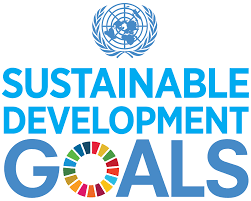
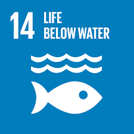

Sustainable Development Goals is
To achieve a better and more sustainable future for all.
How to help in having a better future
About
The Sustainable Development Goals (SDGs) aim to transform our world.
They are a call to action to end poverty and inequality, protect the planet, and ensure that all people enjoy health, justice and prosperity.
The Sustainable Development Goals (SDGs) were developed at the United Nations Conference on Sustainable Development
SDG-1 : No Poverty
More than 700 million people, or 10 per cent of the world population, still live in extreme poverty today,
struggling to fulfil the most basic needs like health, education, and access to water and sanitation.
In-Form Essential is a complete case management system for housing and homeless advocacy organizations.
The app allows your organization to build more meaningful relationships with clients to support them and their needs better with one centralized view of their record.

SDG-2 : Zero Hunger
The COVID-19 pandemic could now double that number,
putting an additional 130 million people at risk of suffering acute hunger by the end of 2020.
AI can help to identify the region's most in need of help. AI can also help with aid distribution in poorer and war-torn areas,
or where natural disasters have caused devastation.
Towards this case , An app helps food banks track client information more effectively. With this app,
staff and volunteers can easily capture client intake through a single form on any device, whether they are on-site or in the
SDG-3 : Good Health and Well-being

Currently, the world is facing a global health crisis unlike any other — COVID-19
AI technologies and interconnected devices make it possible to analyse large quantities of medical data,
monitor patients remotely, and deliver highly targeted treatments.
Early 1970s when research produced MYCIN, an AI program that helped identify blood infections treatments.
AI may help improve cancer screening and diagnosis and plan treatment.
SDG-4 : Quality Education

By April 2020, close to 1.6 billion children and youth were out of school.
And nearly 369 million children who rely on school meals needed to look to other sources for daily nutrition.
AI education helps students develop agency to make a change in tomorrow's world, which will require the ability to identify problems,
generate creative solutions and work collaboratively across multi-cultural teams.
AI helps teachers up their game, providing them all the information that they need.
It also allows teachers to create content that suits their students best while ensuring personalized learning.
Cloud for Good is a consultancy that helps organizations focus on providing quality education by centralizing,rather being tied up by
paperwork and lack of automation.
SDG-5 : Gender Equality

Currently, women continue to be underrepresented at all levels of political leadership, and 1 in 5 women and girls
between the ages of 15 and 49 report experiencing physical or sexual violence by an intimate partner within a 12-month period.
Gender Insights helps organizations quickly identify internal areas of unconscious bias to make achieving gender equity both actionable and attainable,
through rollup views of recommendations or dashboards to display ratios.
AI improves on its own, its foundations are laid by the creators whose inherent gender biases.
SDG-6 : Clean water and sanitation

Worldwide, one in three people do not have access to safe drinking water, two out of five people do not have a basic hand-washing facility with soap and water,
and more than 673 million people still practice open defecation.
Clean Water AI uses a deep learning neural network to detect dangerous bacteria and harmful particles in water.
Drinking water can be seen at a microscopic level with real-time detection.
SDG-7 : Affordable and clean energy

The world is making progress towards Goal 7, with encouraging signs that energy is becoming more sustainable and widely available.
AI can balance electricity supply and demand needs in real-time, optimize energy use and storage to reduce rates.
Power companies can get better forecasts, manage their grids and schedule maintenance.
SDG-8 : Decent work and Economic Growth

In developing countries, the middle class now makes up more than 34 percent of total employment,
which has nearly tripled between 1991 and 2015. However, as the global economy continues to recover from the 2008 crisis.
It can increase the efficiency with which things are done and vastly improve the decision-making process by analysing large amounts of data.
AI techniques in behavioral economics, economists will be able to more precisely estimate the impact of human perceptions and behavior on the actual state of affairs.
SDG-9 : Industry , Innovation and infrastucture

It is estimated that in 2019, 96.5 per cent were covered by at least a 2G network.
Paper-heavy processes and time-consuming manual copying and pasting. AI could then improve both the technology and the user's experience.
By managing all of your documents in the cloud, reduce the number of errors and easily find your documents when you need them.
AI is being used to track the real-time interactions of workers, machinery,
and objects on the site and alert supervisors of potential safety issues, construction errors, and productivity issues.
Forecasting efficiency losses for better planning. Detecting quality defects to facilitate predictive maintenance.
SDG-10 : Reduced Inequality

AI enables new technologies that improve efficiency and productivity,but it may also lead to increased inequalities among and within countries.
Inequality within and among countries is a persistent cause for concern. Government can use machine learning to predict good candidates
to hire or the likelihood of repeat offenses to decide on sentencing, which, in turn, would reduce individual biases.
SDG-11 : Sustainable Cities and Communities

Since 2007, more than half the world's population has been living in cities,
and that share is projected to rise to 60 per cent by 2030. Cities have an outsized impact on global emissions,
and One Commute helps reduce that carbon footprint by creating options for commuters. Whether it's carpooling or taking your bike to work,
One Commuter can help your employees match with alternate modes of transportation based on a set of parameters.
AI or machine learning techniques can be used to map land use across time to generate crucial insights using the satellite imagery
and aerial view 2D or 3D images of geographical areas.
SDG-12 : Responsible consumption and Production

Economic and social progress over the last century has been accompanied by environmental degradation
that is endangering the very systems on which our future development.Annual estimates of 1.3 billion tons,
or 13.8% of food is wasted due to poor transportation, in-efficient harvesting practices, processing, and natural spoilage.
Electric waste has grown by 38% while e-waste recycling continues to drag at 20%.AI in different areas in services and marketing
has rapidly gained attention from academics and practitioners. However, it is yet to be explored how this technology can be utilised effectively and in a variety of ways to promote and enable responsible consumption and production and increase consumers’ awareness
SDG-13 : Climate Action

2019 was the second warmest year on record and the end of the warmest decade (2010- 2019) ever recorded.
Carbon dioxide (CO2) levels and other greenhouse gases in the atmosphere rose to new records in 2019. AI can be employed to help mitigate the climate crisis through the
measurement of emissions at both the macro and micro levels, through the reduction of emissions and greenhouse gas (GHG) effects.
AI applications could help design more energy-efficient buildings, improve power storage and optimise renewable energy.
SDG-14 : Life below water

The ocean drives global systems that make the Earth habitable for humankind. Our rainwater, drinking water, weather, climate, coastlines, much of our food, and even the oxygen
in the air we breathe, are all ultimately provided and regulated by the sea.
AI is helping to conserve oceans is by fighting plastic pollution with machine learning. Machine learning tackles one of the biggest challenges of combating plastic pollution
which is tracking and measuring how exactly it gets into bodies of water. A scanner can be depolyed below the sea to check any object or material containing and platic substance.
SDG-15 : Life on Land

Around 1 million animal and plant species are threatened with extinction , many within decades according to the 2019.
AI can also provide the tools to better monitor pollution and identify sources of air quality issues faster and more accurately.
Artificial intelligence integrated with satellite imagery can sense changes in land use, vegetation, forest cover, and the fallout of natural disasters.
An app built helps organizations create and measure sustainability goals, engage with employees, reduce consumption, and comply with environmental reporting. With
So-Fi, track, manage, and forecast progress for corporate sustainability goals in real-time, ensuring goals always remains on track.
SDG-16 : Peace, Justice and strong Institutions

AI solutions can alert law enforcement authorities to potential fraud and other criminal behavior, making justice systems
more transparent and responsive with data-driven insights.
It also envisions transparent, effective and accountable institutions, which promote non-discriminatory laws and policies,
combat corruption, bribery and organised crime and prevent violence, terrorism and crime.
The number of people fleeing war, persecution and conflict exceeded 70 million in 2018.
SDG-17 : Partnerships for the Goals

The SDGs can only be realized with strong global partnerships and cooperation.
A successful development agenda requires inclusive partnerships — at the global, regional, national and local levels —
built upon principles and values, and upon a shared vision and shared goals placing people and the planet at the centre.